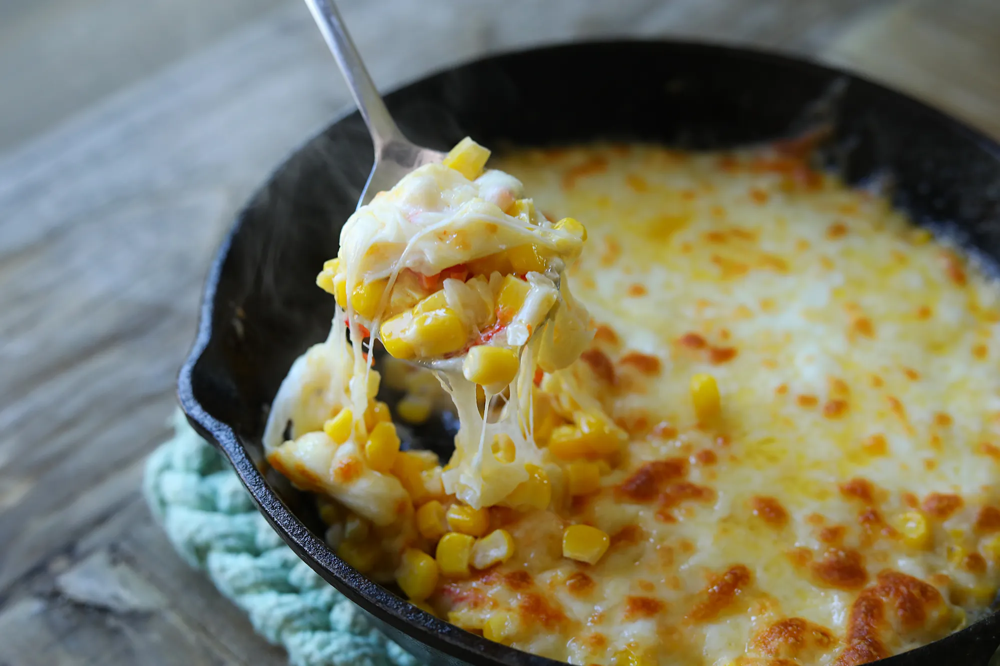

CORN CHEESE

A crowd favorite appetizer.
Satisfying cheese pull.
Goes well with Cold Beer!
Ingredients:
- Canned Corn (15 oz)
- Bell peppers (1 ea)
- Onion (1/4 ea)
- Mayonnaise (3 tbsp)
- Sugar (1 tsp)
- Salt (1/4 tsp)
- Black Pepper
- Butter (1 tbsp)
- Mozzarella (1/3 to 1/2 cup)
How to make:
- Dice Bell peppers and onion.
- Combine corn, mayonnaise, sugar, salt, black pepper, onion and bell peppers in a bowl.
- Heat cast iron pan or skillet over medium high heat.
- Melt butter in the pan.
- Add corn mixture and saute for 2-3 min.
- Spread evenly on the pan and top with mozzarella cheese.
- Place in the oven and high broil for 2-3 min.
- Remove from oven and serve while it's hot and cheesy!
- Enjoy!